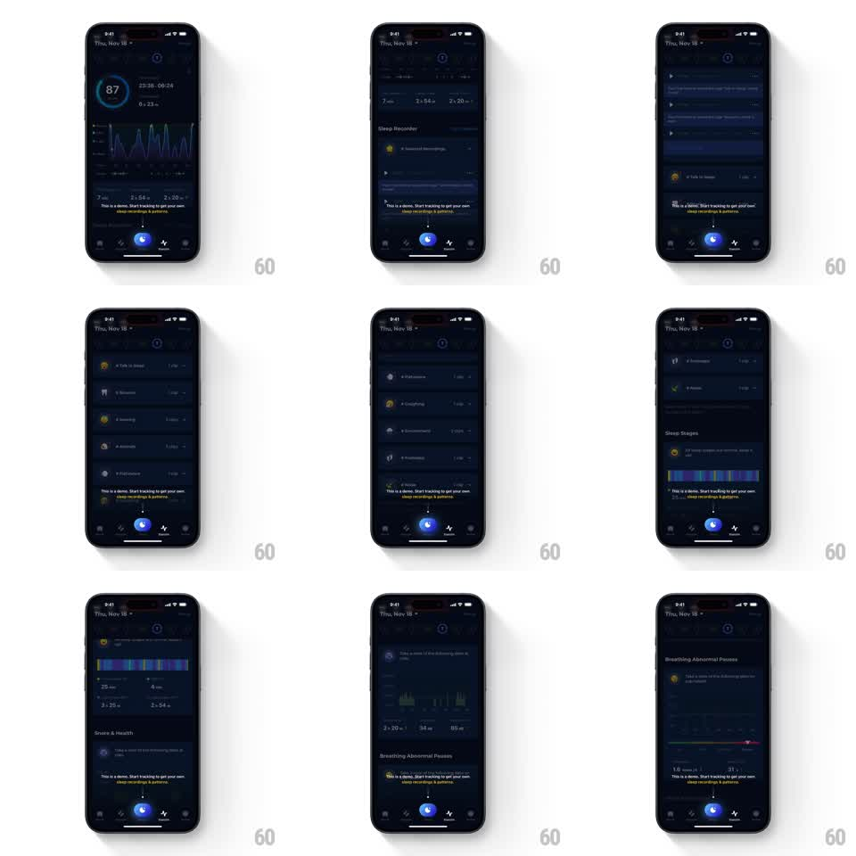

Media
Frame-by-frame

Rebuild this animation 1:1: ShutEye's demo tip overlay - a floating "This is a demo. Start tracking to get your own sleep recordings & patterns." pill stays pinned above the tab bar while the sleep stats scroll underneath.

Rebuild this animation 1:1: ShutEye's demo tip overlay - a floating "This is a demo. Start tracking to get your own sleep recordings & patterns." pill stays pinned above the tab bar while the sleep stats scroll underneath. ## Integration Integration: stack-agnostic spec - springs given as stiffness/damping, timed motions as duration + curve; map every value to your framework and animation library of choice. ## Scene The ShutEye stats screen (dark, sleep score ring 87, stage graphs, recordings list with Talk in Sleep / Scream / Snore rows, Sleep Stages bar, Snore & Health, Breathing Abnormal Pauses). A dark pill with the demo tip text and an arrow floats just above the bottom tab bar's glowing center button. ## Motion spec Pattern: persistent floating tip over scrolling content, continuous. - The tip pill slides up and fades in above the tab bar (spring stiffness 300 damping 22) when the screen loads. - As the user scrolls the stats, all content moves under the pill; the pill stays fixed, its backdrop blurring whatever passes behind it. - The pill bobs very subtly on scroll stop (2px settle, 300ms) to read as floating, not glued. - The tab bar's center button keeps its glow pulse underneath the pill. ## Calibration - The pill never scrolls, shrinks, or repositions - the entire effect is its stubbornness. - Backdrop blur on the pill is light (about 12px) so passing charts tint it without smearing. ## Reduced motion Pill appears without the rise; no bob. ## Don't miss - The pill points down at the center tab button with a small arrow or anchor alignment. - It survives every section of the scroll - recordings, stages, health, breathing - unchanged.